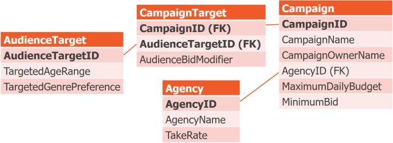

Perfectly Normal
An Advanced Primer on Normalization
Kevin Feasel (@feaselkl)http://CSmore.info/on/dbdesign
Who Am I? What Am I Doing Here?


Is This Talk Right for Me?
Have you ever believed any of the following?
- "Normalization isn't relevant in the business world."
- "Normalize until it hurts, denormalize until it works."
- "The main purpose of normalization is to minimize disk utilization by removing duplicate data."
- "Database design doesn't matter--add more hardware and that will fix the problem."
- "Getting to Third Normal Form is all you need to know about normalization."
- "Third Normal Form is important."
Motivation
My goals in this talk:
- Explain the basics behind database normalization.
- Dive into the two most important normal forms.
- Briefly cover other interesting normal forms.
- Cover critiques of normalization.
A Brief Warning
Normalization is a part of relational theory, meaning that there will be math and there will be discussions of formal logic.
I will do my best to minimize the learning curve, but we're ultimately solving math problems using logical analysis.
Also, some of these normal forms are not well-understood outside of academic circles and so your interpretation of the forms may not match what I'm going to describe.
The Source
The source of most of today's talk is C.J. Date's Database Design and Relational Theory, 2nd Edition (Apress, 2019).

The Scenario
Our scenario is a music studio, responsible for managing artists, cutting albums, marketing, and distribution.
This studio is working on a centralized database system but their application developers don't have much experience and would like our advice on how to do things the right way.
Agenda
- The Basics
- 1NF
- BCNF
- 5NF
- 4NF
- 6NF
- Normalizaton and...
What is Normalization?
Normalization is a set of logical rules and processes to follow.
Normalization works off of a logical data model. From there, we can (theoretically) adapt to a physical data model for implementation.
Quick Primer on Terminology
We're used to thinking in terms of tables, rows, and columns. Let's take a step back and talk about the data modeling terms.

Goals of Normalization
- Remove redundant data
- Fix incorrect designs
- Achieve a design which is a good representation of the real world
- Simplify the statement and enforcement of certain integrity constraints
The Normal Forms

Normal Forms Ranked by Importance
Agenda
- The Basics
- 1NF
- BCNF
- 5NF
- 4NF
- 6NF
- Normalizaton and...
What 1NF Is
First normal form (1NF) is all about key rules and the shape of tuples.
Given relvar R with heading H containing attributes A1...An of types T1...Tn, all tuples follow heading H and have one value of type Ti for attribute Ai.
In Other Words
| Artist (CHAR) | Album (CHAR) | ReleaseYear (INT) |
|---|---|---|
| Tsunami Bomb | The Ultimate Escape | 2002 |
| Tsunami Bomb | The Definitive Act | 2004 |
| Tsunami Bomb | Trust No One | 2016 |
Adding a new tuple t(Tsunami Bomb, The Spine that Binds, 2019) requires that the new tuple's heading, with attributes and types, matches the existing relvar's heading.
The Rules on 1NF
First normal form (1NF) has a few rules:
- New tuples match the existing relvar's heading.
- All tuples must have values for all attributes. This means NULL violates 1NF!
- No duplicate tuples are allowed
- Attribute order does not matter for tuples
- Tuple order does not matter for relations
- All attributes are regular: they have a name, a type, are not hidden, etc.
Quick Quiz -- Is This in 1NF?
Quick Quiz -- Is This in 1NF?
Answer: YES!
Repeated sets are NOT a violation of 1NF!
Agenda
- The Basics
- 1NF
- BCNF
- 5NF
- 4NF
- 6NF
- Normalizaton and...
The Importance of BCNF
Boyce-Codd Normal Form is one of the two most important normal forms. It prevents a variety of data anomalies:
- Update anomalies
- Redundant data (some types)
- Missing data
We Have Data
| Date | Artist | Album | Genre | Studio | Manager |
|---|---|---|---|---|---|
| 2023-07-10 | Kidneythieves | A1 | Industrial | A | Marie |
| 2023-07-10 | Metric | A3 | Indie | A | Marie |
| 2023-07-10 | Land of Talk | A2 | Indie | B | Jacques |
| 2023-07-11 | Kidneythieves | A1 | Industrial | A | Marie |
Update Anomalies
Lindsay takes over Studio A. But we miss it in one entry.
| Date | Artist | Album | Genre | Studio | Manager |
|---|---|---|---|---|---|
| 2023-07-10 | Kidneythieves | A1 | Industrial | A | Lindsay |
| 2023-07-10 | Metric | A3 | Indie | A | Lindsay |
| 2023-07-10 | Land of Talk | A2 | Indie | B | Jacques |
| 2023-07-11 | Kidneythieves | A1 | Industrial | A | Marie |
Redundant Data
Kidneythieves had to cancel so we booked Metric for the entire day. Let's update the database.
| Date | Artist | Album | Genre | Studio | Manager |
|---|---|---|---|---|---|
| 2023-07-10 | Metric | A3 | Indie | A | Lindsay |
| 2023-07-10 | Metric | A3 | Indie | A | Lindsay |
| 2023-07-10 | Land of Talk | A2 | Indie | B | Jacques |
| 2023-07-11 | Kidneythieves | A1 | Industrial | A | Lindsay |
Missing Data
Nobody's booked in Studio C. How do we indicate that it exists?
| Date | Artist | Album | Genre | Studio | Manager |
|---|---|---|---|---|---|
| 2023-07-10 | Metric | A3 | Indie | A | Lindsay |
| 2023-07-10 | Metric | A3 | Indie | A | Lindsay |
| 2023-07-10 | Land of Talk | A2 | Indie | B | Jacques |
| 2023-07-11 | Kidneythieves | A1 | Industrial | A | Lindsay |
| 2023-07-10 | NOBODY | NONE | N/A | C | Charles |
Boyce-Codd Normal Form Defined
We can define BCNF as:
All functional dependencies have superkey determinants.
Superkey
Superkey: a unique combination of attributes, but not necessarily the most parsimonious unique combination of attributes.
If (RecordingDate, Artist) is a key, (RecordingDate) is a subkey and (RecordingDate, Artist, Studio) is a superkey.
Functional Dependencies
Suppose we have some attribute SoundEngineer.
The value of SoundEngineer depends on inputs Producer and Studio:
| Studio | Producer | SoundEngineer |
|---|---|---|
| A | Janice | Sam |
| B | Randi | Edgar |
| A | Janice | Sam |
| C | Tamika | Sam |
Functional Dependencies
When we see Studio=A and Producer=Janice, we know SoundEngineer=Sam.
In other words, Studio and Producer determine SoundEngineer, or (Studio, Producer) is the determinant for SoundEngineer.
In mathematical terms, we can write this as (Studio, Producer) -> SoundEngineer.
Functional Dependencies
Note that functional dependencies only go one way.
(Studio, Producer) -> SoundEngineer.
Studio=A && Producer=Janice -> SoundEngineer=Sam.
But Sam can be the sound engineer for other combinations of Studio + Producer. The only thing we guarantee is that (A, Janice) -> Sam (for all combinations of Studio*Producer and their relevant SoundEngineers).
Figuring out Functional Dependencies
NOTE: figuring out functional dependencies in practice may be difficult!
There are two primary techniques for figuring them out in practice.
- Ask an expert -- discuss business rules and find out what they know.
- Review existing data and see where we can find columns whose values always match up in this way. Functional dependencies must always hold; it can't just be a "sometimes" thing.
Boyce-Codd Normal Form Reviewed
All functional dependencies have superkey determinants.
- Superkey: key and maybe more.
- Functional dependency: strict relationship between attributes.
- Determinant: "input(s)" for the functional dependency.
Relvars in BCNF are guaranteed to suffer from none of the anomalies we just described!
The Solution, Step 1
Start with a relvar whose heading has all attributes. Figure out the candidate key(s) and functional dependencies for this relvar.
| CampaignID | CName, COName, AgencyID, MaxBudget, MinBid |
| AgencyID | AName, TakeRate |
| AudienceTargetID | TAgeRng, TGenPref |
| CampaignID, AudienceTargetID | AudienceBidModifier |
The Solution, Step 2
Next, ask this question: are all determinants candidate keys? The answer is obviously no. Only the final determinant is.
| Determinant | Dependency |
|---|---|
| CampaignID | CampaignName, CampaignOwnerName, AgencyID, MaximumDailyBudget, MinimumBid |
| AgencyID | AgencyName, TakeRate |
| AudienceTargetID | TargetAgeRange, TargetGenrePreference |
| CampaignID, AudienceTargetID | AudienceBidModifier |
Intermission: Heath's Theorem
Let's introduce Heath's theorem here:
Given a relvar R with components { X, Y, Z }, as well as functional dependency X --> Y, we can break R into two relvars, containing { X, Y } and { X, Z }, without loss.
The Solution, Step 3
If the answer to Step 2 was no, take a non-candidate key determinant and break it out into its own relvar, following Heath's theorem.


The Solution, Again
Repeat steps 2 and 3 as long as there are more functional dependencies which are not candidate keys. Let's take CampaignID next.
The Solution, Again Again
Our remaining functional dependencies are:
| Determinant | Dependency |
|---|---|
| AudienceTargetID | TargetAgeRange, TargetGenrePreference |
| CampaignID, AudienceTargetID | AudienceBidModifier |
This is not good enough! AudienceTargetID is a subkey of the candidate key, not a superkey! Therefore, break it out.
The End Result
Here is our final data model, in BCNF. Also, I took the opportunity to rename the DM Campaign relvar to CampaignTarget, which better represents its meaning.
Agenda
- The Basics
- 1NF
- BCNF
- 5NF
- 4NF
- 6NF
- Normalizaton and...
Fifth Normal Form (5NF)
Fifth Normal Form is the second most-important normal form. What BCNF is to functional dependencies, 5NF is to join dependencies
Relvar R is in 5NF if and only if every join dependency in R is implied in the keys of R.
Join Dependency: if X1, X2, ..., Xn are the subsets of heading H on relvar R, a join dependency holds in R if and only if R can be non-loss decomposed into its projections on X1, X2, ..., Xn.
A Quick Example
Suppose we have a relvar called Warehouse with FDs { WarehouseID -> GeneralManager, City } && { City -> PropertyTaxRate }.
| WarehouseID | GeneralManager | City | PropertyTaxRate |
|---|---|---|---|
| 1 | Steve | Chicago | 4.8% |
| 2 | Lewis | Lafayette | 2.1% |
| 3 | Suzanne | Chicago | 4.8% |
| 4 | Alexa | Lexington | 3.3% |
| 5 | Lee | Lafyette | 2.1% |
A Quick Example
A join dependency says we can break this relvar into at two components and reconstitute it without loss: W = { WarehouseID, GeneralManager, City }; C = { City, PropertyTaxRate }
| WarehouseID | GeneralManager | City |
|---|---|---|
| 1 | Steve | Chicago |
| 2 | Lewis | Lafayette |
| 3 | Suzanne | Chicago |
| 4 | Alexa | Lexington |
| 5 | Lee | Lafyette |
| City | Status |
|---|---|
| Chicago | 4.8% |
| Lafayette | 2.1% |
| Lexington | 3.3% |
Functional and Join Dependencies
Functional dependencies are join dependencies.
But not all join dependencies are functional dependencies!
BCNF and 5NF
A relvar R is in 5th Normal Form if it is in Boyce-Codd Normal Form and the relvar has no composite keys.
A relvar may be in BCNF but not 5NF if there is a composite key and there are non-functional join dependencies which are not key-based.
Another Example
| Artist | Album | SalesCountry |
|---|---|---|
| Horrorpops | Bring It On! | United States |
| Horrorpops | Bring It On! | Denmark |
| Band 1 | Unnamed Future Album | Canada |
| Band 2 | Unnamed Future Album | Canada |
| Band 1 | Unnamed Future Album | United States |
| Band 2 | Unnamed Future Album | United States |
Another Example
This relvar AlbumSales has a key of { Artist, Album, SalesCountry }. This means it is in BCNF, but if it feels weird to you, it should!
There are two join dependencies here! { Artist, Album } and { Album, SalesCountry } can be cleanly split out from the ternary relationship into two separate relvars.
Another Example
| Artist | Album |
|---|---|
| Horrorpops | Bring It On! |
| Band 1 | Unnamed Future Album |
| Band 2 | Unnamed Future Album |
| Album | SalesCountry |
|---|---|
| Bring It On! | United States |
| Bring It On! | Denmark |
| Unnamed Future Album | Canada |
| Unnamed Future Album | United States |
The Connection Trap
Suppose we have the following rules:
- IF a Store (S) stocks a Genre (G)...
- AND (S) stocks the work of an Artist (A)...
- AND (A) performs in (G)...
- THEN (S) sells works in (G) from (A)
This is also known as a symmetric constraint. If this does not apply, then we fall into the connection trap.
No Connection Trap
In this setup, if all three attributes are necessary to determine which combinations are valid and which are not, then we are in 5NF.
| Store | Genre | Artist |
|---|---|---|
| Music Everywhere | Punk Rock | Bad Religion |
| Music Everywhere | Prog Rock | Rush |
| The Music Factory | Indie | Metric |
No Connection Trap
| Store | Genre | Artist |
|---|---|---|
| M.E. | Punk | Bad Religion |
| M.E. | Prog | Rush |
| MFac | Indie | Metric |
Now, we see two stores (Music Everywhere & The Music Factory) who sell albums by various artists in different genres. Bad Religion makes Punk Rock albums, Rush makes Prog Rock albums, and Metric makes Indie albums.
If we have a rule in which stores sell all artists in a genre, then we can decompose this entity further.
We then have a JD: *{ {S, G}, {G, A}, {S, A} }
No Connection Trap
| Store | Genre |
|---|---|
| M.E. | Punk |
| M.E. | Prog |
| MFac | Indie |
| Genre | Artist |
|---|---|
| Punk | Bad Religion |
| Prog | Rush |
| Indie | Metric |
| Store | Artist |
|---|---|
| M.E. | Bad Religion |
| M.E. | Rush |
| MFac | Metric |
As long as our symmetric constraint holds, everything is fine. But what happens if Bad Religion sells a Prog Rock album?
No Connection Trap
| Store | Genre |
|---|---|
| M.E. | Punk |
| M.E. | Prog |
| MFac | Indie |
| Store | Artist |
|---|---|
| M.E. | Bad Religion |
| M.E. | Rush |
| MFac | Indie |
| Genre | Artist |
|---|---|
| Indie | Metric |
| Prog | Rush |
| Punk | Bad Religion |
| Prog | Bad Religion |
Now this means that Music Everywhere must sell Bad Religion's Prog Rock album.
The Connection Trap in Action
Now let's say that there is no such symmetric constraint. The only results we should see are the following:
| Store | Genre | Artist |
|---|---|---|
| Music Everywhere | Punk Rock | Bad Religion |
| Music Everywhere | Prog Rock | Rush |
| The Music Factory | Indie | Metric |
The Connection Trap in Action
| Store | Genre |
|---|---|
| M.E. | Punk |
| M.E. | Prog |
| MFac | Indie |
| Store | Artist |
|---|---|
| M.E. | Bad Religion |
| M.E. | Rush |
| MFac | Indie |
| Genre | Artist |
|---|---|
| Indie | Metric |
| Prog | Rush |
| Punk | Bad Religion |
| Prog | Bad Religion |
We've broken this out. But is it correct?
Nope! This says that Music Everywhere will sell Bad Religion's Prog Rock album, but that's not true!
Why Bother?
If 5NF seems like overkill, here are a few reasons why it can be important.
- With no composite keys, BCNF is 5NF, so you're already good.
- Relvars not in 5NF can suffer from deletion anomalies and insertion anomalies.
- Symmetric constraints aren't extremely common, but there is a common variant which you'll want to think about.
Agenda
- The Basics
- 1NF
- BCNF
- 5NF
- 4NF
- 6NF
- Normalizaton and...
Fourth Normal Form (4NF)
Fourth Normal Form is an anachronism--it's really just a subset of 5NF.
Relvar R is in 4NF if and only if every Multi-Valued Dependency of R is implied in the keys of R.
Multi-Valued Dependency: a join dependency with exactly two components.
Multi-Valued Dependencies
We've already seen an example of this: relvar AlbumSales has a key of { Artist, Album, SalesCountry }.
- Artist
Ris on AlbumA, sold in SalesCountryS - Each album has a set of artists, and each album is sold in a set of countries
- For each album, there is a tuple for every combination of artist sales country
Multi-Valued Dependencies
| Artist | Album | SalesCountry |
|---|---|---|
| Horrorpops | Bring It On! | United States |
| Horrorpops | Bring It On! | Denmark |
| Band 1 | Unnamed Future Album | Canada |
| Band 2 | Unnamed Future Album | Canada |
| Band 1 | Unnamed Future Album | United States |
| Band 2 | Unnamed Future Album | United States |
*{ {Album, Artist}, {Album, SalesCountry} }
Multi-Valued Dependencies
*{ {Album, Artist}, {Album, SalesCountry} }
The "4NF" diagram for this looks like:
Album ->-> Artist && Album ->-> SalesCountry, or Album ->-> Artist|SalesCountry
Fagin's Theorem
Relvar R can be nonloss decomposed into its componentsXYandXZif and only ifX->->Y|Zholds in R.
In other words, if there are multiple, independent attributes, split them out into separate relvars.
What this Prevents
- Needing to have multiple "copies" of the same record--Unnamed Future Album need one row per artist * country, but what happens if we miss one of these?
- Any update likely needs to update multiple rows
- Any delete operation likely needs to delete multiple rows
Agenda
- The Basics
- 1NF
- BCNF
- 5NF
- 4NF
- 6NF
- Normalizaton and...
Sixth Normal Form
Relvar R is in Sixth Normal Form (6NF) if and only if all join dependencies which hold in R are trivial.
In other words, there may be one non-key attribute in addition to the key.
An Example
Suppose we have a relvar { AlbumID, AlbumName, Runtime, ReleaseYear, ArtistID, ArtistID2, GenreID, GenreID2, GenreID3 }. Furthermore, our natural key is AlbumID. This relvar is in 5NF (BCNF + non-composite key) and can be made 6NF in the following way:
An Example
{ AlbumID, AlbumName }
{ AlbumID, Runtime }
{ AlbumID, ReleaseYear }
...
{ AlbumID, GenreID2 }
{ AlbumID, GenreID3 }
Do We Need 6NF?
Maybe!
- If an attribute always has a value, it's better to cluster these attributes together.
- If an attribute may be missing, it might be better to break it out into 6NF (to avoid NULL).
- If an attribute is part of a "nested set," we can unpivot these into one table.
Do We Need 6NF?
Suppose we might not always have runtime and we want to unpivot artists and genres (assuming there is no 'order' to artists or genres). Then we'd have:
{ AlbumID, AlbumName, ReleaseYear }
{ AlbumID, Runtime }
{ AlbumID, ArtistID }
{ AlbumID, GenreID }
6NF and Intervals
6NF also helps us work with intervals of data. Usually this is temporal data, like this example of a Tour relation:
| HeadlinerArtist | City | Interval |
|---|---|---|
| Bad Religion | London | D4:D8 |
| Horrorpops | Paris | D3:D3 |
| Horrorpops | Athens | D5:D10 |
6NF and Intervals
Suppose we have an SCD2 style table:
| HeadlinerArtist | WarmupArtist | City | StartDate | EndDate |
|---|---|---|---|---|
| Bad Religion | Rad Beligion | London | D1 | D8 |
| Bad Religion | The Deviates | London | D9 | D14 |
| Bad Religion | The Deviates | Paris | D15 | D17 |
| Horrorpops | The Chop Tops | Athens | D1 | D17 |
| Horrorpops | Nekromantix | Athens | D18 | D18 |
6NF and Intervals
Break it into 2 non-redundant relvars:
| Headliner | City | Interval |
|---|---|---|
| BadReligion | London | D1:D14 |
| BadReligion | Paris | D15:D17 |
| Horrorpops | Athens | D1:D18 |
| Headliner | Warmup | Interval |
|---|---|---|
| B.R. | Rad Beligion | D1:D8 |
| B.R. | The Deviates | D9:D17 |
| H. | The Chop Tops | D1:D17 |
| H. | Nekromantix | D18:D18 |
To bring these back together, unpack on Interval, join together elements, and re-pack on Interval.
Visualizing the Interval
Visualizing the Interval
Unpacking and Re-Packing
Unpacking and Re-Packing
Unpacking and Re-Packing
This gets us back to our type-2 SCD, but without having to store denormalized data!
Agenda
- The Basics
- 1NF
- BCNF
- 5NF
- 4NF
- 6NF
- Normalizaton and...
Normalization and Data Warehousing
Relational theorists like Date tend not to like the Kimball model very much. As a general-purpose relational model, the star schema is terrible.
It is, however, a great model for data warehousing if you follow certain rules:
- One and only one process to write data
- The model is a proper model of business processes and understanding
- Facts represent measurements of things
- Dimensions represent further information about things
- The appropriate slowly-changing dimension type is used for each dimension
Normalization and Overnormalization
Overnormalization isn't really a thing. What people tend to see as overnormalization tend to be one of the following:
- Trying to remove legitimate business flexibility
- Lossy decomposition and phantom rows
Normalization and Denormalization
Normalization has very specific rules: you can tell where you are and what you'd need to do to get to the next level. With denormalization, how can we answer the following questions?
- Denormalize to what extent?
- Which method(s) should I use to denormalize these relvars?
- Is my data model sufficiently denormalized?
- Has my data model been denormalized correctly?
Normalization and Denormalization
General philosophy:
- Denormalizing to increase redundancy can be okay when needed. Ex: data warehousing.
- Denormalization can add invalid design ideas back in--avoid those at all costs.
Normalization and Its Discontents
Normalization is not the end-all of relational design.
- Join dependencies and functional dependencies are not the only kinds of constraints, and normalization will not help with these others
- Multiple non-loss decompositions into 5NF may be possible, but there is no formal guidance on which to choose
- Applying academic advice to practical circumstances is not always a direct mapping
- Normalization is explicitly about the logical model, not the physical model
Wrapping Up
This has been a look at normalization from an academic perspective. This can be a complicated topic and I've tried to straddle the line between formal correctness and ease of explanation.
Wrapping Up
To learn more, go here:
https://CSmore.info/on/dbdesign
And for help, contact me:
feasel@catallaxyservices.com | @feaselkl
Catallaxy Services consulting:
https://CSmore.info/on/contact